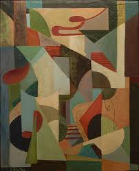

fire...
 The ancient Greeks considered fire one of the major elements in the universe alongside water, earth, and air. Earth, water and air are all forms of matter, but fire is special; it is the visible, tangible side effect of matter changing form.
The ancient Greeks considered fire one of the major elements in the universe alongside water, earth, and air. Earth, water and air are all forms of matter, but fire is special; it is the visible, tangible side effect of matter changing form.
spiral...

Eadem Mutata Resurgo: ``I shall arise the same though changed''.
That is the inscription on the tombstone of Jakob Bernouilli, a Swiss Mathematician (1654 - 1705), who wrote a treatise about spirals called Spira mirabilis (Wonderful Spirals).
more...shapeshifting...
"I am large. I contain multitudes."
These words come from Walt Whitman's epic poem "Song of Myself." We are large. We contain multitudes. Do you feel this? Do you feel that you are large? Do you know it to be true?
more...dance to the present...
What is the present? The present is you!
Your body, your mind, your feelings, your spirit. It contains all your joys and sorrows, all your memories, all your experiences, all the deep wisdom you've gathered in the course of your life-time.
more...precious sweet juicy tender wonderful hearts!...
Let's dance to our hearts--our precious hearts!
Our hearts that give us so much joy. Our hearts that steer us in the direction of our happiness.
more...